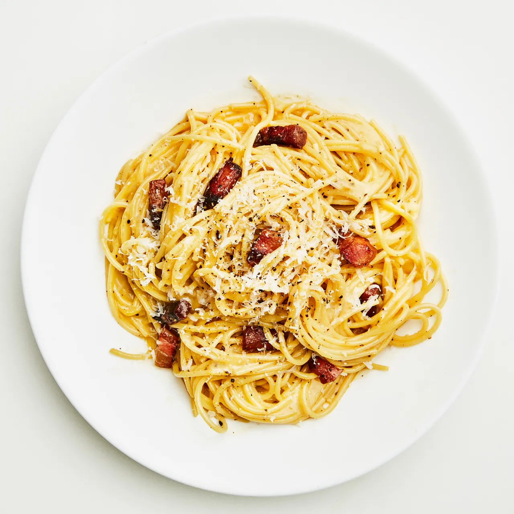

Simple Pasta Carbonara

Description
By Claire Sadditz
Carbonara, a signature Roman dish, combines crispy bits of pork, a peppery kick,
and a rich cheese sauce enriched with eggs. It's a versatile recipe, suitable
for both dinner and late-night cravings. Proper technique and high-quality
ingredients are essential. While guanciale is the traditional choice, diced
pancetta or bacon can be used for the salty depth. Farm-fresh eggs and premium
cheese and pasta are recommended for the best results. Technique-wise, incorporating
hot pasta water into the egg mixture and controlling the temperature ensures a
creamy, glossy sauce without overcooking the yolks. Whether enjoyed with greens for
dinner or savored with a fork during late-night hangouts, carbonara's allure lies in
its simplicity and taste.
Ingredients
4 servings
- 3 Tbsp. kosher salt
- 4 oz. guanciale (salt-cured pork jowl), pancetta (Italian bacon), or bacon
- 2 oz. Parmesan or Pecorino Romano
- 4 large egg yolks
- Freshly ground black pepper
- 2 Tbsp. extra-virgin olive oil
- 1 lb. spaghetti, bucatini, or rigatoni
Preparation
- Heat 6 qt. water in a large pot over high. When water starts to steam, add 3
Tbsp. salt and cover pot with a lid (this will bring water to a boil faster).
- While you are waiting on the water, do a little prep. Remove 4 oz. guanciale
from packaging and cut into about 1x¼" strips. Finely grate 2 oz. cheese and
set aside one-quarter of cheese for later.
- Whisk 4 egg yolks and 2 whole eggs in a medium bowl until no streaks remain,
then stir in remaining grated cheese. Add several cranks of pepper and set aside.
- Working next to pot, heat 2 Tbsp. oil in a large Dutch oven or other heavy pot
over medium. Add guanciale and cook, stirring occasionally, until crisp around
the edges, 7-10 minutes.
- Remove pot from heat. Using a wooden spoon, fish out guanciale and transfer to
a small bowl. Pour fat into a heatproof measuring cup, then add back about 3
Tbsp. to pot. Discard any remaining fat.
- Cook 1 lb. pasta in boiling water, stirring occasionally, 2 minutes shy of
package instructions. Just before pasta is finished, scoop out 1¾ cups pasta
cooking liquid with same heatproof measuring cup.
- Add 1 cup reserved pasta cooking liquid to Dutch oven and bring to a boil over
medium-high. Drain pasta in a colander, then transfer to Dutch oven.
- Cook pasta, stirring constantly and vigorously, until al dente and water
is reduced by about half, about 2 minutes. Remove pot from heat.
- Whisk ¼ cup reserved pasta water into egg mixture, then very slowly
stream into Dutch oven, stirring constantly, until cheese is melted and
egg is thickened to form a glossy sauce. Season with salt, if needed.
Thin sauce with remaining ½ cup pasta cooking liquid, adding a tablespoonful
at a time, until it's the consistency of heavy cream (you most likely won't
use all of it).
- Mix in guanciale and divide pasta among bowls. Top with pepper and reserved cheese.